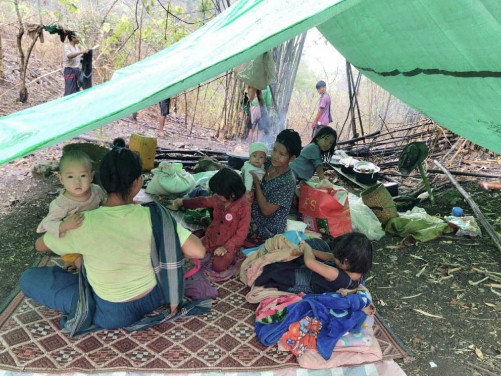
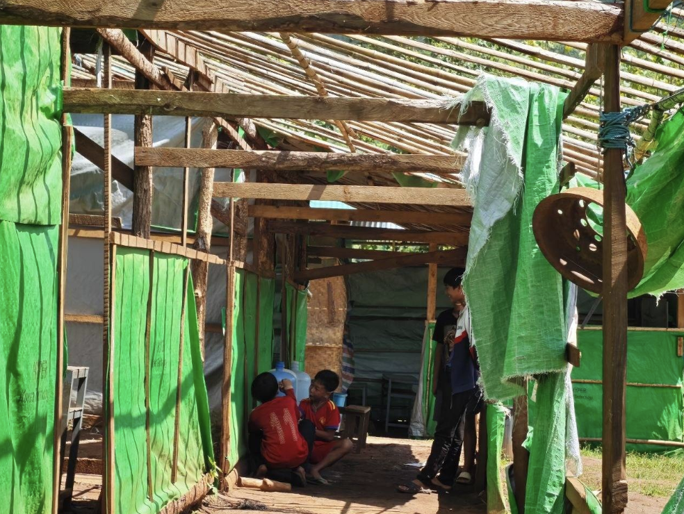
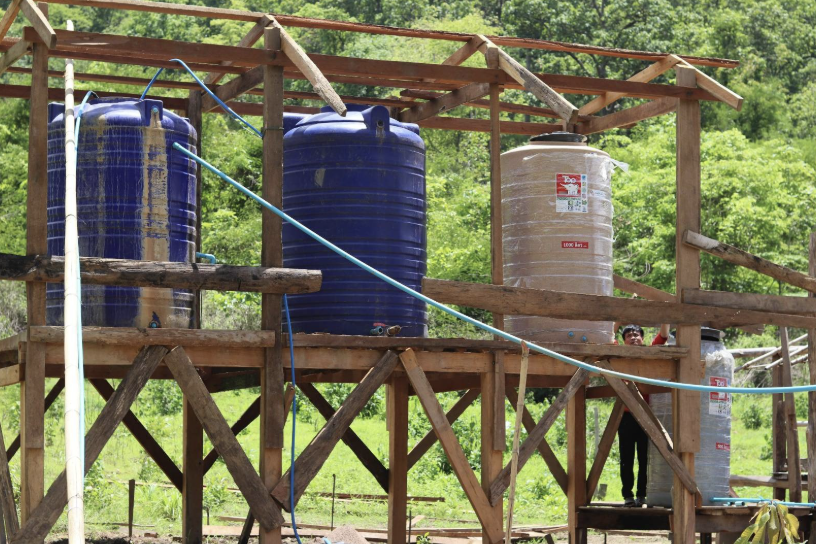
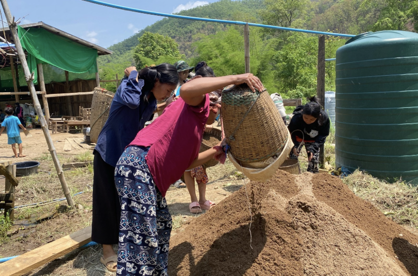

On May 8, a military raid forced IDPs in Hpruso Township's Hway Du Lar camp to flee for their lives. Leaving behind vehicles and rations, 700 residents walked for half a day to safety, with several elderly individuals injured. Armed forces occupied the site and burned down tents. Currently, up to three displaced families are crowding into single makeshift tarpaulin shelters.
Humanitarian Monthly Briefer
Coordination Team for Emergency Relief (Karenni)

Displaced people crowd together under a single makeshift tarpaulin shelter after fleeing the military raid
Highlights in This Issue
- Military raid displaces 1,000+ IDPs, creating an urgent need for shelter.
- Escalating disease outbreaks and critical medical gaps threaten vulnerable IDPs.
- Severe teacher and supply shortages, compounded by storm damage, cripple education across IDP camps.
Key Numbers
Since February 2021,
- 1,415+ armed clashes
- 742+ civilian deaths
- 165+ civilians arrested
- 365+ CRSV cases reported
Military Raid on IDP Camp Triggers Mass Displacement and Humanitarian Emergency
The crisis is rapidly deteriorating as military operations escalate along the Hpruso-Nan Hpa highway. Heavy weapons fire and drone strikes on civilian areas have forced nearby villages to evacuate, displacing over 1,000 people across the township. With heavy rains starting, aid workers are urgently appealing for emergency food, medicine, and roofing materials to provide life-saving shelter for newly displaced families.
Disease Outbreaks and Lack of Care Severely Impact IDP Camps
Across Karenni State and the Shan-Karenni border, displaced populations are facing escalating health emergencies as the rainy season begins. Infectious diseases are spreading rapidly through crowded settlements; in the Saung Cherry camp, a severe diarrhea outbreak caused by contaminated water has sickened dozens of children under five. Meanwhile, the Kyea Tone camp is battling widespread fevers and respiratory illnesses among children and the elderly, with the recent tragic death of a 40-year-old man raising urgent fears of a dengue fever outbreak. Additionally, a persistent mumps outbreak continues to spread among children under 15 across camps in western Hpruso and Demoso townships, compounding the suffering of families who cannot afford basic medical costs.
These active outbreaks are being severely exacerbated by a collapsing healthcare infrastructure and logistical barriers. In western Pekhon, skyrocketing fuel prices and degraded roads are preventing pregnant women from accessing essential prenatal care, tragically resulting in miscarriages and premature births. Simultaneously, a critical, months-long shortage of routine childhood vaccines in Demoso Township has left infants highly vulnerable to preventable diseases. With displaced families increasingly unable to reach distant hospitals or afford rising medical expenses, healthcare workers are urgently appealing for immediate medical supplies, emergency interventions, and secure access to mobile clinics.

IDP residents assess the damage to a temporary shelter destroyed by severe storms.
Education Crisis: Shortages Cripple IDP Schools
The approaching rainy season and ongoing conflict are severely disrupting education in Karenni State IDP camps. In western Mobye, pre-monsoon storms have destroyed school buildings and residential tents, leaving families exposed. Relief efforts are hindered by broken supply routes and tarpaulin prices surging to 100,000 MMK. Simultaneously, schools in eastern Demoso face critical stationary shortages for the 2026-2027 academic year. Textbooks are worn beyond use, and essential supplies like notebooks are prohibitively expensive for displaced parents.
Adding to the crisis is a severe shortage of teaching staff. In eastern Loikaw Township, where over 40 schools operate, existing teachers are overburdened and often forced to teach multiple grades simultaneously. As camps attempt to expand curriculums to include high school science subjects, they face a critical lack of qualified instructors. Parents are urgently appealing for higher education programs within safe zones, fearing that without further opportunities, displaced youth face high risks of substance abuse or forced migration.
CTER Installs Bio-Sand Filtration System to Secure Clean Water for IDPs and Students
Between May 18 and 23, 2026, CTER successfully installed a bio-sand water filtration system at the Daw Nye Khu IDP camp in Huai Pu Long, serving 442 displaced individuals and 248 students across two local schools. Working alongside community volunteers and two water specialists, CTER renovated the damaged pipeline with durable LDPE pipes and constructed a multi-stage filtration system layered with graded stones, charcoal, and sand. The upgraded system now provides safe drinking and cooking water, with an additional outlet improving sanitation at community toilets. While community members received hands-on technical training, long-term sustainability remains a concern due to monsoon flooding and limited local funds for repairs.


CTER installs a bio-sand filtration system at Daw Nye Khu IDP camp, Huai Pu Long
About CTER
CTER was formed in March 2021 to respond to humanitarian needs triggered by the Myanmar military coup in 2021.
CTER provides humanitarian assistance, including through cross-border for IDPs throughout Karenni State.
CTER partners with local CBOs to distribute food, shelter, and medicines to the IDPs.
CTER engages with Karenni diasporas and conducts advocacy and fundraising for Karenni IDPs.
Email:
cterkarenniinfo@gmail.com
Facebook:
@CTER-Karenni
YouTube:
https://www.youtube.com/@CTERKarenni